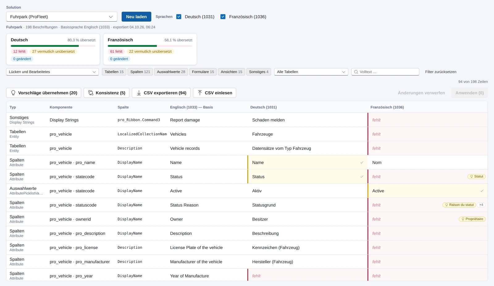
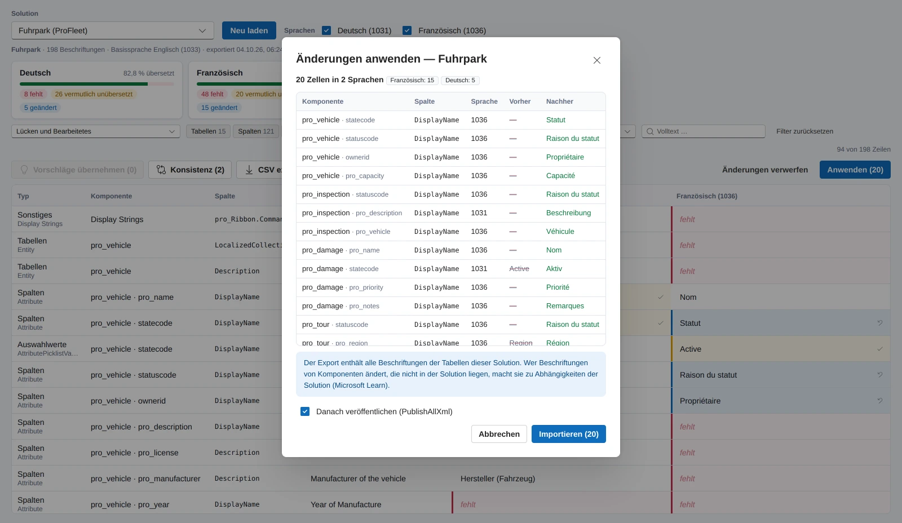

Bei einem Kunden aus der Lichtindustrie läuft Dynamics 365 in drei Sprachen: Englisch als Basis, Deutsch und Französisch für die Ländergesellschaften. Jede Tabelle, jede Spalte, jeder Auswahlwert, jedes Formular und jede Ansicht trägt den Anzeigenamen je Sprache. Mit jedem Release kommen neue Spalten dazu, und die Übersetzung kommt, wenn jemand daran denkt. Meistens denkt jemand daran, wenn sich die französische Niederlassung meldet.
Der Standardweg
Der Weg, den Microsoft dafür vorsieht, ist seit vielen Versionen derselbe. Im Maker-Portal Übersetzungen exportieren. Man bekommt eine Zip-Datei mit einer Excel-2003-XML-Datei darin, ein Blatt mit allen Beschriftungen, eine Spalte je Sprache, mehrere tausend Zeilen. Die öffnet man in Excel, sucht die leeren Zellen in der französischen Spalte, füllt sie, speichert ohne das Format zu zerstören, packt die Zip-Datei wieder zusammen, importiert, veröffentlicht. Es gibt in der XrmToolBox Werkzeuge, die den Weg nach Excel bequemer machen. Das Grundproblem bleibt: Die Datei zeigt alles, nicht die Lücken. Und die Fachabteilung, die die Übersetzung eigentlich kennt, hat weder Zugriff auf das Maker-Portal noch Lust auf eine XML-Datei mit vierzig Spalten.
Ich wollte außerdem die zweite Sorte Lücke sehen, die der Export gar nicht als Lücke führt: eine deutsche Zelle, in der der englische Text steht. Jemand hat beim Anlegen den Basistext in alle Sprachen kopiert, damit nichts leer ist, und seitdem heißt die Spalte auf Deutsch „Status Reason".
Die Datei zeigt alles, nicht die Lücken.
Derselbe Export, anders gelesen
Die Entscheidung, die alles andere bestimmt hat, fiel vor dem ersten Code. Eine Code App kommt an Dataverse über den Konnektor, und der kann Tabellen lesen und Aktionen aufrufen, aber keine Metadaten schreiben. Das weiß ich aus der Admin Console. Also nicht über Metadaten-Updates gehen, sondern über genau den Export und Import, den Microsoft vorsieht. Eine Aktion je Richtung, und beide decken alle Komponententypen in einem Format ab. Das Studio ändert nichts an diesem Weg vorbei. Die Datei, die zurückgeht, ist die exportierte Datei plus die geänderten Zellen: keine Zeile entfernt, nichts umsortiert, Formatierung und unbekannte Spalten bleiben, und ohne Änderungen ist das Ergebnis byteidentisch mit dem Export. Dafür gibt es einen Test, und der war der erste, den ich geschrieben habe.
Darauf sitzt die Matrix. Eine Zeile je Beschriftung mit Typ, Komponente und Spalte, der Basistext nur lesend, je Zielsprache eine Zelle in einem von vier Zuständen: fehlt, vermutlich unübersetzt, geändert, ok. „Vermutlich" ist ehrlich gemeint. „Status" ist auch Deutsch, und deshalb lässt sich die Zelle als korrekt markieren, statt dass die App entscheidet. Kennzahlen je Sprache stehen darüber, ein Klick auf die Zahl setzt den Filter.

Zwei Dinge haben sich beim Bauen als nützlicher herausgestellt, als ich dachte. Das Glossar: Ist derselbe Basistext anderswo schon übersetzt, schlägt die Zelle das vor, und ein Knopf übernimmt es für alle gleichen Basistexte. In den Beispieldaten erledigt das ein Fünftel der Lücken, in einer echten Umgebung mit Jahren an Customizing vermutlich mehr. Und der Konsistenz-Report, der dasselbe Wort mit zwei verschiedenen Übersetzungen findet, „Notizen" hier und „Anmerkungen" dort. Das ist kein Fehler des Exports, das ist die Geschichte der Umgebung.
Für die Fachabteilung gibt es den Weg über CSV. Die gefilterten Zeilen gehen hinaus, nur die Lücken, mit stabilem Schlüssel je Zeile, und kommen ausgefüllt zurück. Das Einlesen zeigt vorab, was sich ändert und was nicht übernommen wird. Leere Zellen bedeuten unverändert. Niemand muss dafür ins Maker-Portal.

Was ich dabei nicht wusste
Die Leitplanken stehen im Code, nicht in der Anleitung. Die Basissprache wird nie geschrieben. Eine unveränderte Datei wird nie importiert. Eine vorhandene Übersetzung wird nie geleert, weil nicht dokumentiert ist, ob eine leere Zelle beim Import „löschen" oder „unverändert" bedeutet. Texte über 500 Zeichen werden abgelehnt, weil der Import daran scheitert. Es läuft ein Import zur Zeit, und solange er läuft, ist die Matrix gesperrt.
Die letzte Leitplanke kam aus dem Code-Review am selben Tag: Für den Export probiert die App bei einem Fehler den nächsten Weg, nativ, Konnektor, Konnektor mit gebundenem Pfad. Für Import und Veröffentlichen tut sie das nur, wenn der erste Weg nachweislich nicht existiert, und nie nach einem Timeout. Ein Timeout kann heißen, dass der Import auf dem Server längst läuft. Ein zweiter Weg hätte ihn doppelt gestartet.
Was ich nicht aus der Dokumentation weiß und erst in der echten Umgebung sehe: über welchen der drei Wege der Export tatsächlich läuft, ob die Default-Solution exportierbar ist, ob die Importjob-Tabelle für einen normalen Benutzer lesbar ist und wie groß die Datei einer Umgebung mit Sales und Field Service wird. Die Einrichtungsseite der App prüft genau das, und „Export testen" zeigt Weg, Größe und Sprachen, bevor man etwas ändert.
Stand
Konzept und erste Fassung sind heute entstanden, mit Tests für Scanner, Datei-Roundtrip, Lücken, Glossar, CSV und Importprotokoll, und einem Mock-Modus, in dem ein Import simuliert wird. Der erste Lauf gegen die Umgebung mit drei Sprachen steht an. Danach weiß ich, ob die Annahmen oben halten, und dann steht hier eine Zahl: wie viele Lücken eine gewachsene Umgebung tatsächlich hat. Geraten wird keine. Alle Funktionen stehen auf der Produktseite.